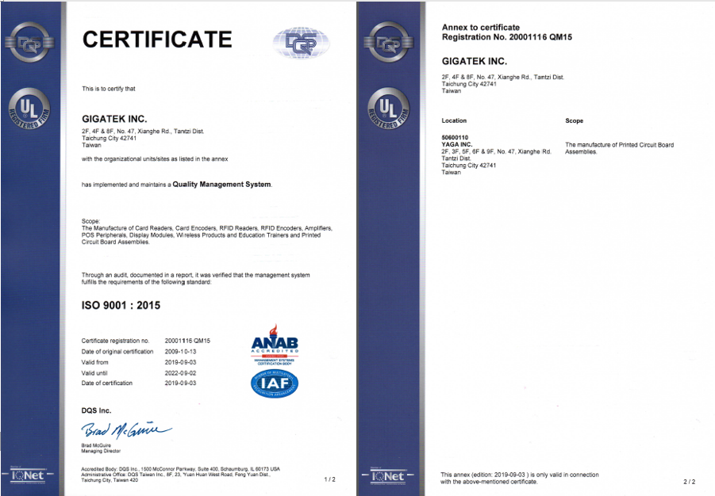

<script src="header.js"></script>

<main class="news-d">

<div class="inner">

	<div class="news-d-t">
		<div class="news-d-n">GIGATEK Finished the Renewal of its ISO9001:2015 Quality Management System Certificate</div>
		<div class="news-d-d">2017-09-11<span class="publisher"><i class="fas fa-pen-nib"></i>Chih-Chuan, Chen</span></div>


	</div>
	<div class="news-d-i">
		<p>
			GIGATEK obtained the approval from DQS Taiwan Inc. and finished the renewal of its ISO9001:2015 Quality Management System Certificate. Through all the staff’s efforts, we ensured that the processes and system met the quality system requirements to improve our ability to provide services for customers and penetrate the market. 

		</p>
		<p>
			<div class="title">About ISO9001:2015</div>
			 ISO 9001 is an internationally recognized quality management system standard. The introduction of ISO 9001 ensures the stability of the operational system, identifying the possible failures in advance and preventing them to improve profitability. The opinions of the stakeholders will be taken into consideration during the strategic planning to enhance the risk management and corresponding measures, ensuring the company’s commitment to the quality requirements.
			 <br><br>
			 For the detailed information about ISO9001:2015, visit&nbsp;&nbsp;<a href="http://the9000store.com/what-are-iso-9000-standards/what-is-iso-9001/" target="_blank"> http://the9000store.com/what-are-iso-9000-standards/what-is-iso-9001/</a>
		</p>
		
		<a class="venobox" href="public/SRC/images/news/ISO9001.png"></a>
	</div>
	<a href="news.php" class="btn">Back</a>
</div>

</main>

<nav class="bread">

	<div class="inner">

		<a href="index.php">Home</a><span class="bread-space">/</span><a href="news.php">NEWS</a>

	</div>


</nav>

<script src="footer.js"></script>